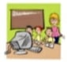
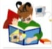

| Kids  | In our Books for Kids we have gathered a wonderful selection of materials to enjoy. These books introduce various skills, increase language and learning abilities and positively heighten awareness of many cultures We have carefully selected these books, which include the topics like music & language-learning and games for their educational value, engaging prose, delightful illustrations and for depicting multicultural images in an affirmative manner. We hope that you and your family will enjoy looking through this collection and will select items to share with those you love. |
| Click for more | |
| Software  | Need a graphics card to play the newest games? Want to network your home computers? What about a new hard drive? Our books in the software category have everything that you need to know about computera. Whether you are searching for programming. Web authoring, applications, graphics and multimedia software or even operating systems, you'll find what you need in this section All the books in this category are for solving and professionally handling all your Computer needs. The practical Guides where you can find the immediate solution of your everyday computer problems and excel in the software that you are using The books have information related to topics like Graphics & Multimedia, Information Technology, Computer Languages, Networking & Communications, Secunty, Internet and many more things |
| Click for more | |
| Engineering | This category includes mainly books related to Mechanical Engineering, Civil Engineering Electrical Engineering and Computer Engineering They provide the student and professional engineer with a reference text of a practical nature Designed for engineers, these books can also be used by those in related branches of engineering such as production, marine, offshore, mining, mineral and in particular that of design Some of the books in this section includes for engineers and analysts working with calculations of loads and stress. It includes information on joints; bearing and shear stress, experimental stress analysis. and stress concentrations as well as material behavior and stress/strain measurement. |
| Click for more |